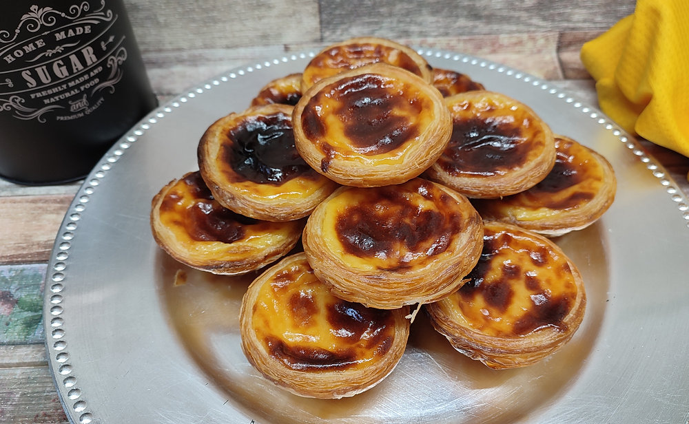

Home

Ingredients:
- 1 cup sugar
- 2 cups milk
- 1/2 cup flour
- 6 egg yolks
- 1 lemon peel
- 1 cinnamon stick
- 1 package puff pastry
Steps:
- Preheat the oven to 375 degrees F (190 degrees C).
- In a saucepan, combine sugar, milk, flour, egg yolks, lemon peel, and cinnamon stick. Cook over medium heat, stirring constantly, until thickened.
- Remove from heat and let cool slightly. Remove lemon peel and cinnamon stick.
- Roll out puff pastry and cut into circles to fit muffin tin cups. Press pastry into cups.
- Fill each cup with the custard mixture.
- Bake in preheated oven until pastry is golden brown and custard is set, about 20 minutes.
- Let cool before serving.